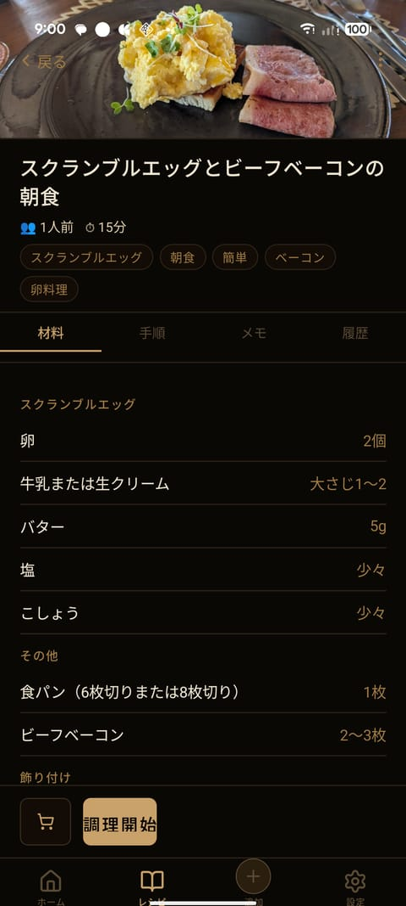
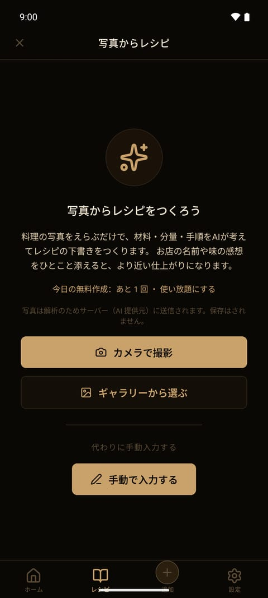
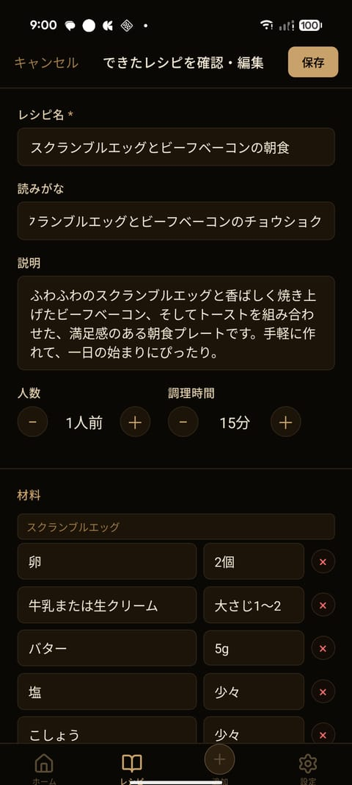
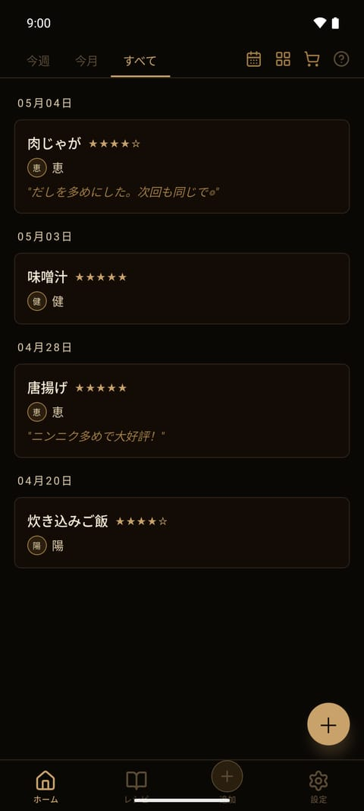
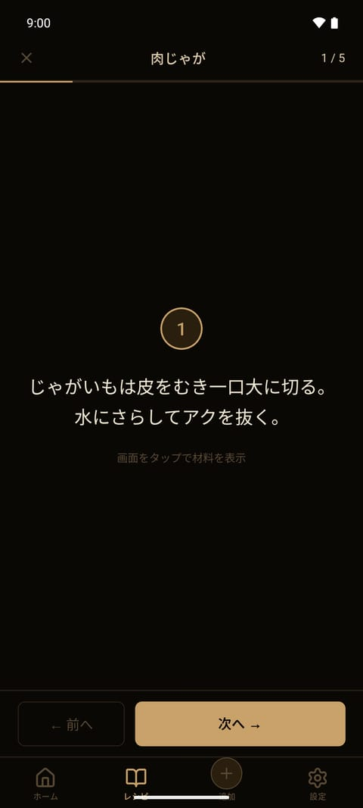

臺所
DAIDOKO
写真を撮るだけで、レシピが完成。
作った料理を撮る。それだけで、材料と手順がレシピになって残ります。
買い物リストも、冷蔵庫の中身も、家族の「作った！」も、ひとつの台所に。

Android 版・無料 / iOS 版は準備中
臺所
DAIDOKO
作った料理を撮る。それだけで、材料と手順がレシピになって残ります。
買い物リストも、冷蔵庫の中身も、家族の「作った！」も、ひとつの台所に。

Android 版・無料 / iOS 版は準備中
料理の写真を撮るだけで、AI が材料と手順を起こします。レシピを書き起こす手間なく、作った記録がそのまま蔵書になります。
レシピサイトの URL を貼れば材料と手順を自動で整形。買い物のレシートを撮れば、買った食材をまとめて在庫に登録できます。
レシピの足りない材料をワンタップで買い物リストへ。買ったものはタップひとつで在庫に移り、残りが少なくなれば知らせます。
家族の「作った！」がホームに並びます。誰がいつ何を作ったかが残り、レシピは家族みんなの手で少しずつ育っていきます。
手順を大きく 1 ステップずつ表示。画面は消えず、タイマーは手順の文中から自動で拾います。濡れた手でもスワイプだけで進めます。
レシピは端末の中に保存され、アカウント登録は不要。バックアップの書き出しにも対応しています。夜の台所に似合う、暗く落ち着いた画面。





インストールしてすぐ使えます。アカウント登録も、料金もかかりません。